← Back · Extra · The Case for Automated Probabilistic Reasoning for Network Performance Analysis (HotNets ’26)
The sampling effort grows only with the query and the user-supplied error threshold δ, not with the model's size (its states or transitions). Its computational challenges are a tight error threshold δ and rare violations.
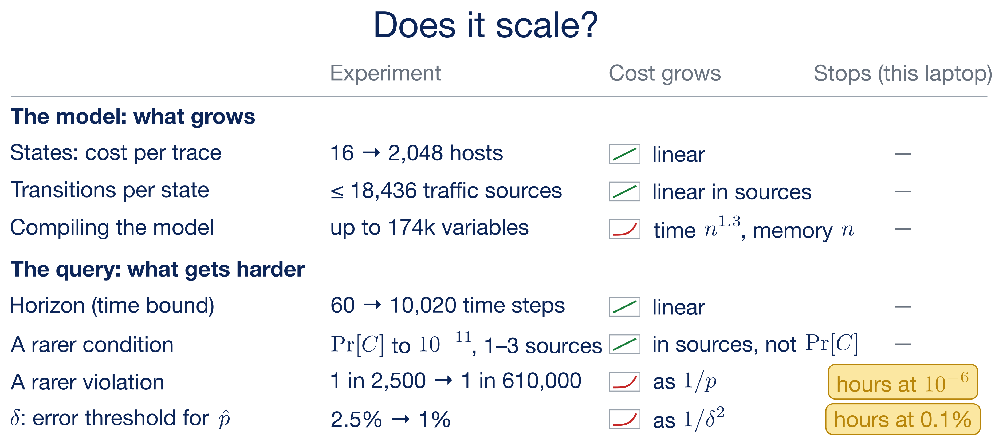
Limits are those of a personal laptop (Mac M2, one core, 8 GB RAM), with a research-prototype compiler and simulator.
Costs we avoid
States and transitions: cost per trace
How the cost arises
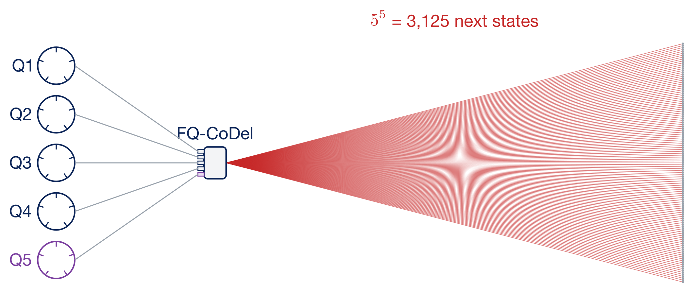
Every combination of the five sources' draws is a next state.
How we avoid it
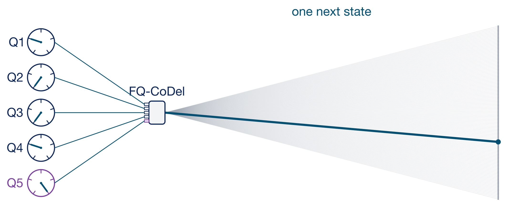
Each source draws once.
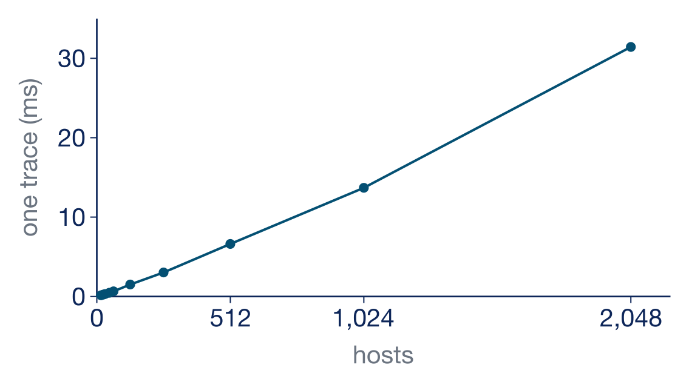
Compiling the model
How the cost arises
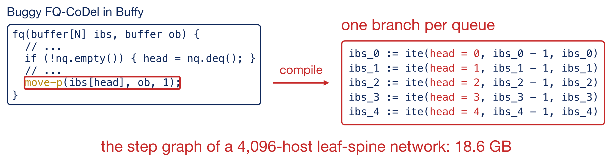
The compiled step grows with every queue an index known only at run time could reach.
How we avoid it
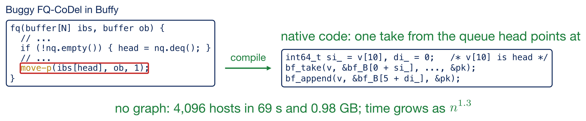
The simulator does not need the graph, and the compiler does not build it.
Horizon (time bound)
How the cost arises
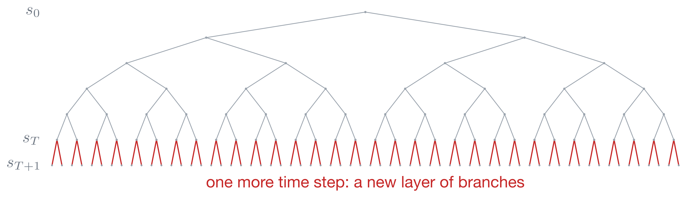
A solver that unrolls every path pays for the whole tree.
How we avoid it
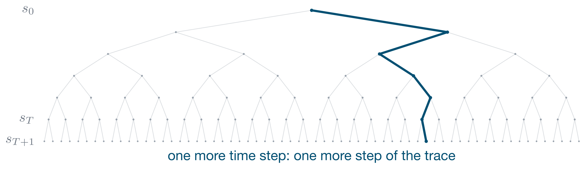
A trace walks one path: twice the horizon, twice the steps.
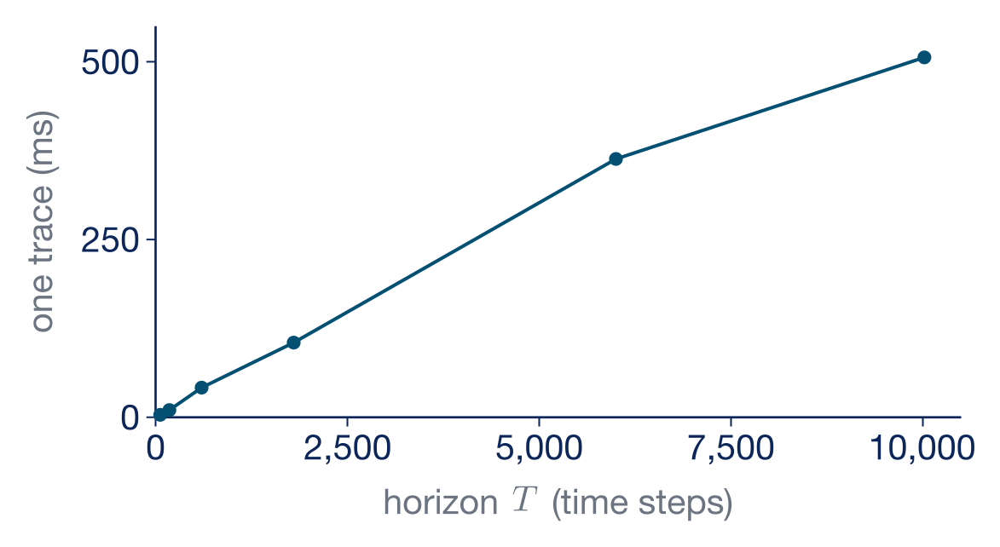
A rarer condition
How the cost arises
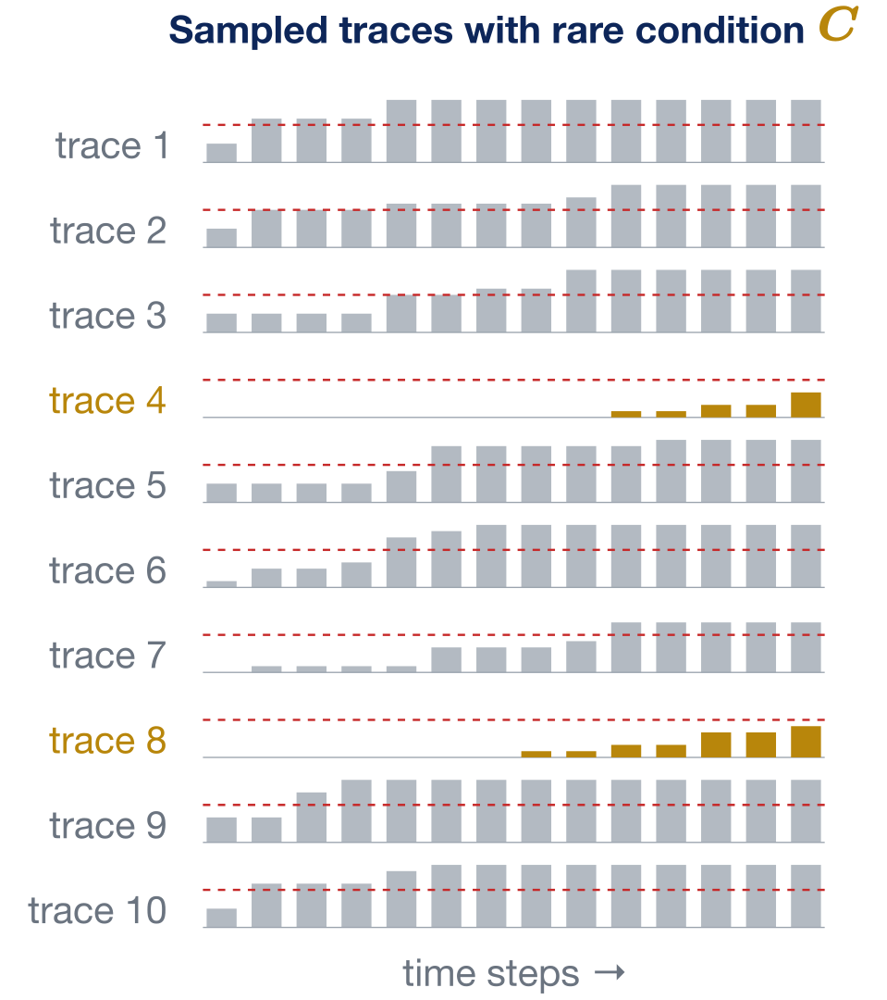
Filtering throws away every trace outside C.
How we avoid it
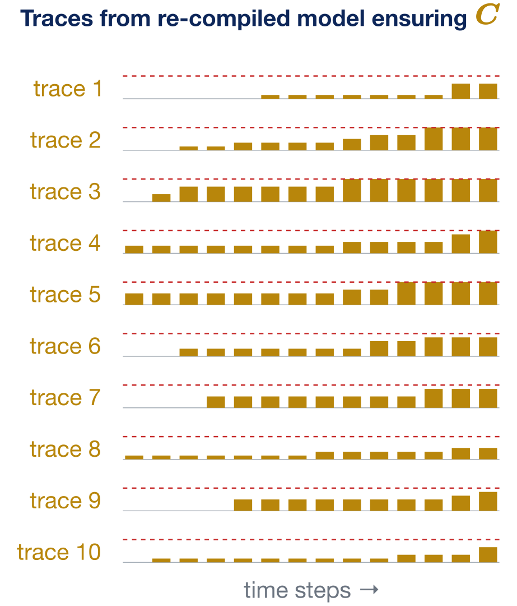
Re-compiling the model prunes every draw outside C: every trace is in C, and they still vary.
How pruning works
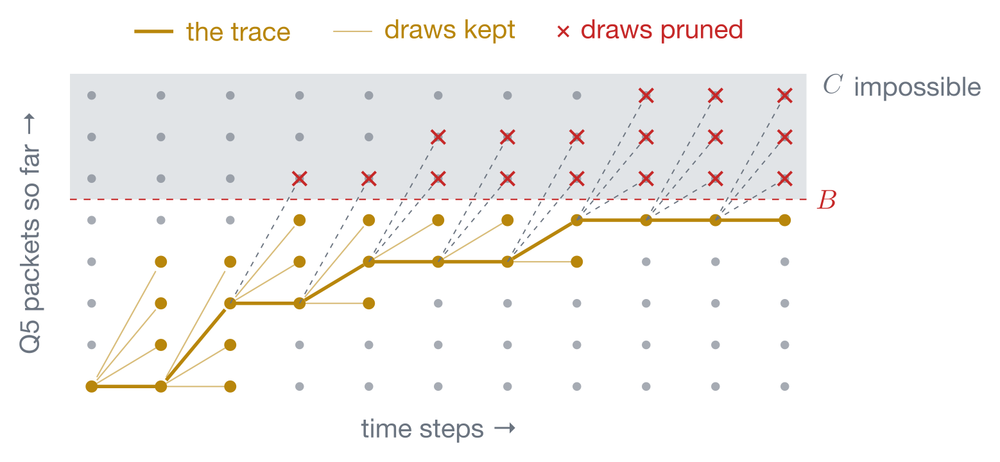
The re-compiled model keeps a table over time steps and Q5's packets so far, and prunes every draw that would make C impossible.Computational challenges
A rarer violation
How the cost arises
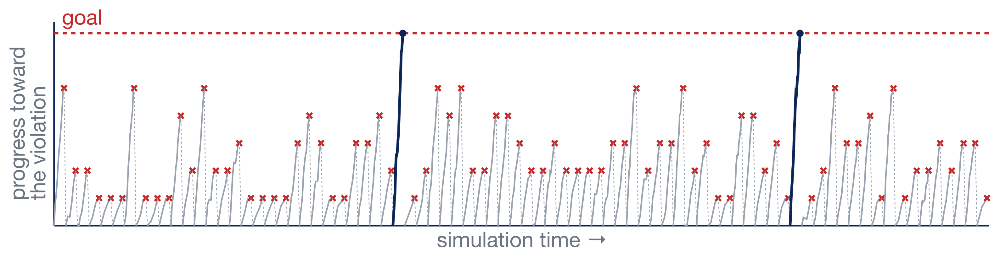
With plain sampling, it is difficult to observe enough violations to reach statistical significance.
How we avoid it
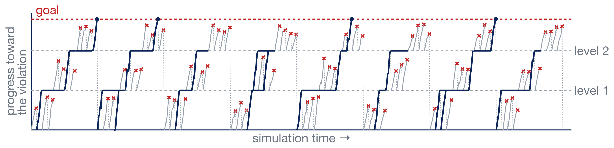
Splitting continues from the traces that reach a level: in the same simulation time, it reaches the goal ~2× as often.
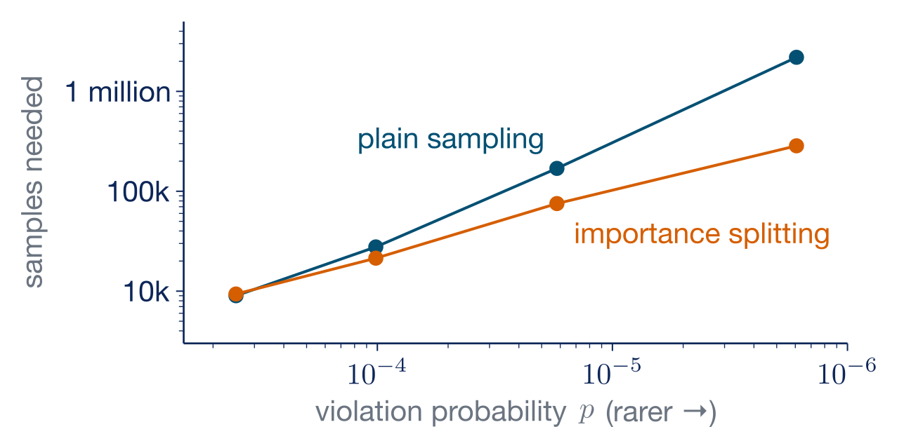
As the violation gets rarer, splitting needs fewer samples, but the cost still grows with 1/p.δ: error threshold for p
How the cost arises
Clopper–Pearson Confidence Interval (CI) test
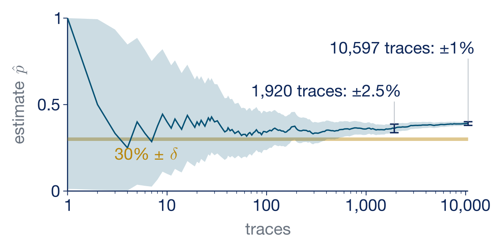
The count grows as the error threshold δ shrinks.
How we (partially) avoid it
Wald Sequential Probability Ratio Test (SPRT)
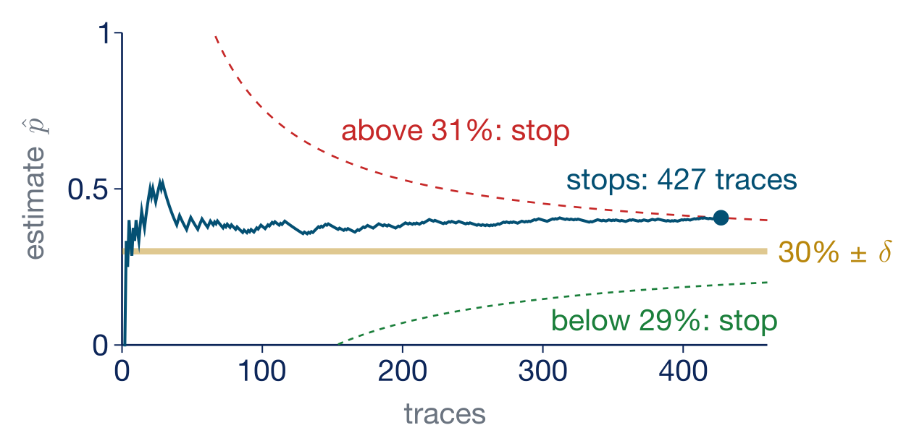
To decide whether the violation chance is above 30%, the SPRT stops as soon as it is sure: here after 427 traces.
Both sample counts scale with the error threshold δ, but are constant in model size.